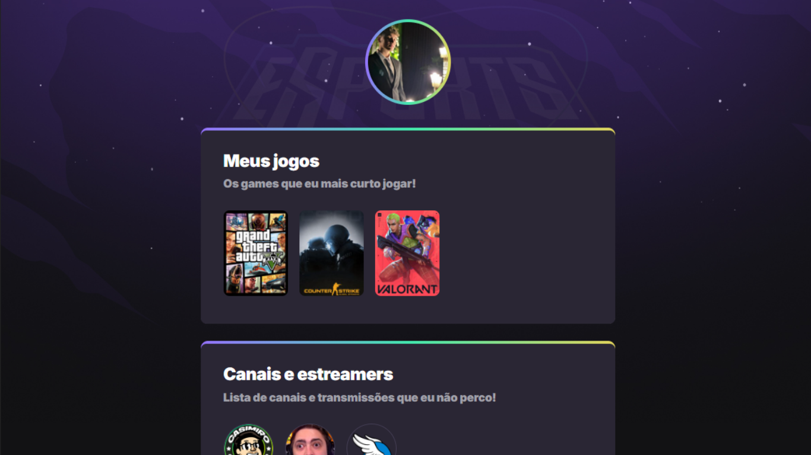
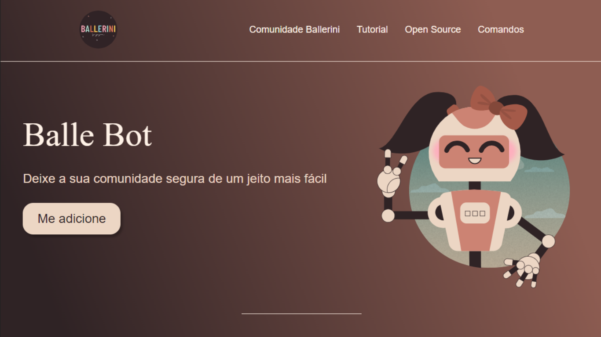
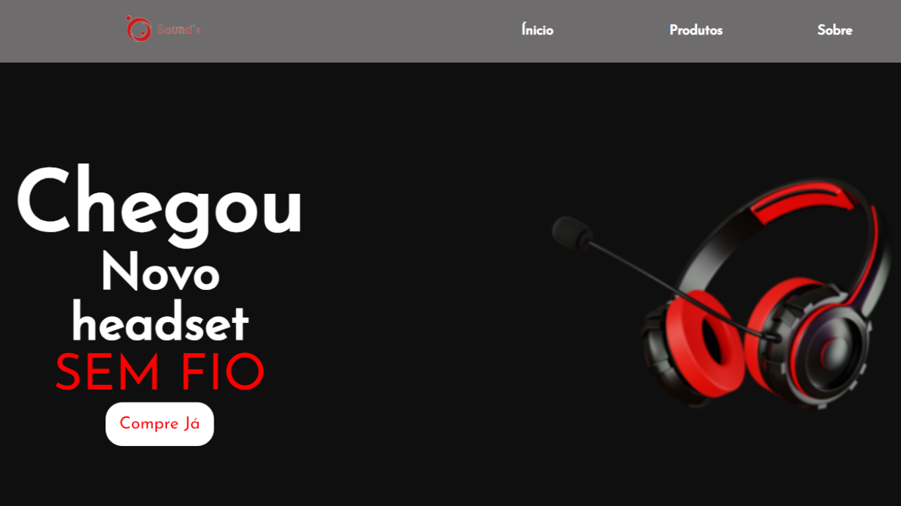

-

ATOM
A Atom, foi um projeto acadêmico, desenvolvido por mim e minha equipe, durante a graduação. A Atom, é uma plataforma que te permite publicar todos os seus projetos, e ter ...Saiba mais
-

UNITEC'S
A Unitec foi o meu projeto de conclusão de curso, uma rede social criada para contribuir no compartilhamento de conhecimento entre docentes e discentes, dos cursos presentes na ...Saiba mais
-

NLW
A Nlw, foi um projeto desenvolvido durante um evento de programação, esse site funciona como uma lista pessoal, possibilitando o usuário que densenvolveu o site, crie tópicos de ...Saiba mais
-

DSMUSIC
DSmusic foi um projeto acadêmico de minha autoria, desenvolvido com o intuito de ser um programa de música, onde o usuário pode navegar pelo site e escutar suas músicas, o site também ...Saiba mais
-

BALLE BOT
A Balle Bot foi um projeto desenvolvido pelo YouTube, esse é um site utilizado para exibir um produto, que é a própria Balle Bot, sua ideia é mostrar as principais funcinalidades ...Saiba mais
-

SOUND'S
Sound's foi um projeto de minha autoria, projetado para servir como uma loja de fones de ouvido, o projeto conta com um início anunciando um novo produto, logo depois aparecem alguns ...Saiba mais